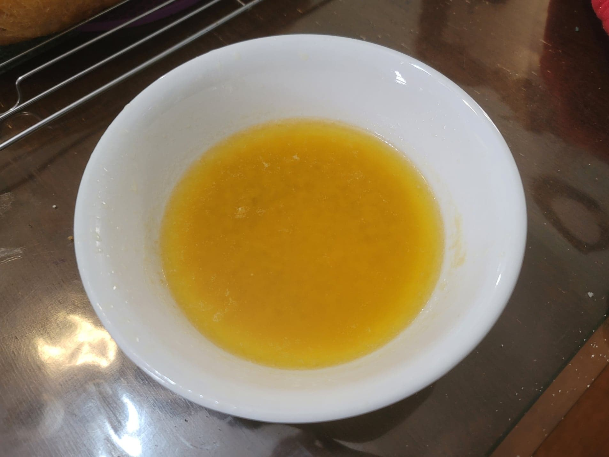

Garlic Butter Dipping Sauce

Ingredients:
- 1 stick (8 tbsp) Butter
- 1 1/2 tsp Garlic powder
- Optional: 1/8 tsp salt
Instructions:
- Melt the butter either on a stovetop or in the microwave.
- Stir in the garlic powder and salt if using. Transfer to a serving bowl.